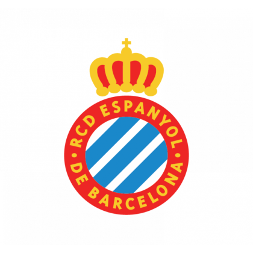

LaLiga: equipos y leyendas
Una página sobre los clubes y los jugadores que forman su historia.
LaLiga: equipos y leyendas
Una página sobre los clubes y los jugadores que forman su historia.
El RCD Espanyol nació en Barcelona en 1900 como Sociedad Española de Foot-Ball y adoptó sus colores blanquiazules en 1910. Su historia conserva una fuerte relación con la ciudad, la cantera y una afición conocida como perica. Fue uno de los participantes de la primera Liga de 1929, cuyo primer gol marcó el espanyolista Pitus Prat. Sarrià, inaugurado en 1923, fue su casa durante décadas, antes del traslado a Montjuïc en 1997 y al RCDE Stadium de Cornellà-El Prat en 2009. Las cuatro Copas de España conquistadas en 1929, 1940, 2000 y 2006 figuran entre sus mayores éxitos. También disputó las finales de la Copa de la UEFA de 1988 y 2007. Referentes como Ricardo Zamora, Rafael Marañón y Raúl Tamudo acompañan esa memoria deportiva. Su trayectoria reciente incluye el título de Segunda de 2021 y el regreso a Primera en 2024, manteniendo la formación de futbolistas como parte de su identidad.
